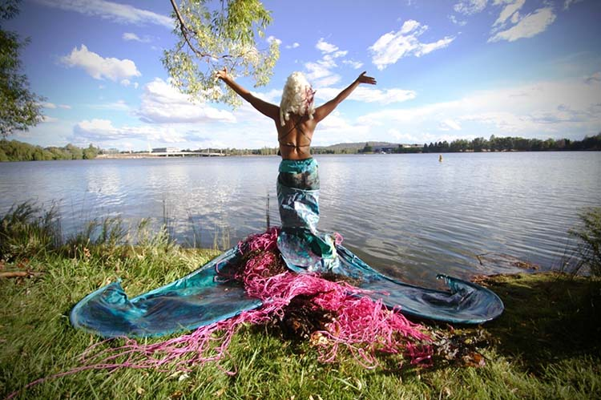

Contour 556/ 2018

5-18 OCTOBER 2018
Lake Burley Griffin, Aspen Island / Bowen Place, Kingston Art Precinct, Henry Rolland Park
The Second edition of contour 556 concluded on October 18th 2018.
A free public art event over three weeks presenting artworks and performances by 60 artists
in the world famous public realm
and national cultural icons around
Lake Burley Griffin, Canberra. contour is unique in the field of public
sculpture and
performance events as it takes place in a consciously
designed and culturally layered landscape, in one of only three designed
capital cities.
Artwork / Artist
Artwork: TBA
Artist: TBA
Detail:
Artwork info to be place here, to give user more info on the artwork of the privous year shown
Artwork: TBA
Artist: TBA
Detail:
Artwork info to be place here, to give user more info on the artwork of the privous year shown
Artwork: TBA
Artist: TBA
Detail:
Artwork info to be place here, to give user more info on the artwork of the privous year shown
Artwork: TBA
Artist: TBA
Detail:
Artwork info to be place here, to give user more info on the artwork of the privous year shown
More Artwork shown like above
More Artwork shown like above, countinuning multiple rows of 3